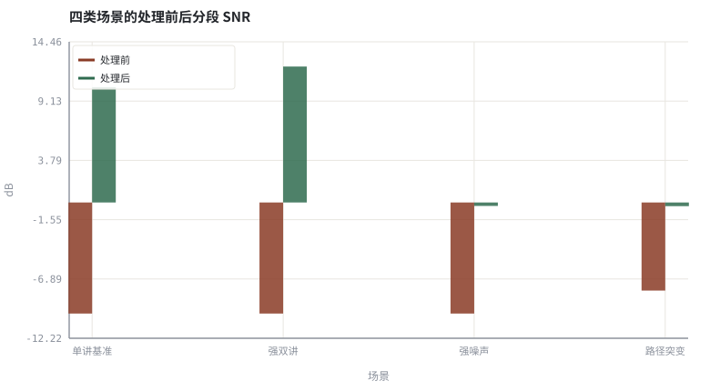
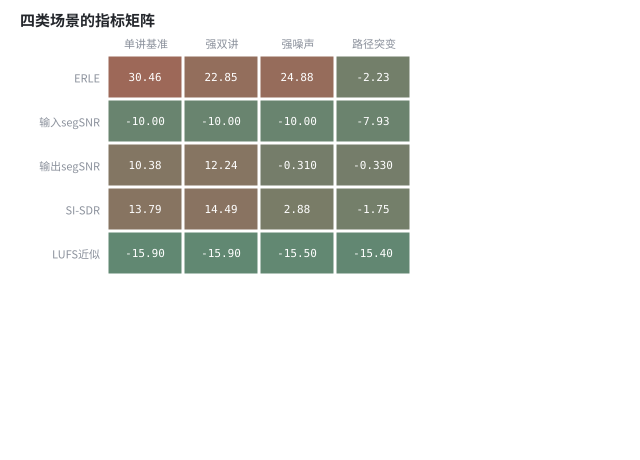

第 18 章上卷综合实验：完整传统 3A 链路与评测
把前十余章的模块装进一条链路，用统一的场景矩阵与指标表做一次验收。
本章位置：上卷到此收束。第 19 章 · 时频掩码：IBM / IRM / CRM 与监督学习形式化 起把同一条链路里的增益估计器换成可学习函数，但接口、因果约束与这张场景矩阵完全不变。
综合评测就是一次端到端集成测试：单模块单元测试全绿，不代表双讲、路径突变这些「集成场景」能过。
- 能把 AEC / ANS / AGC 串成一条可运行的完整链路。
- 能设计覆盖单讲、双讲、强噪声与路径突变的场景矩阵。
- 能同时报失真类、回声类与响度类指标，并解释彼此冲突。
- 能说明上卷方法的失效边界以及下卷要替换的环节。
§知识点地图
每个知识点都配了 1～2 个扩展学习链接；本章完整资源清单见 扩展学习。
| # | 知识点 | 扩展学习 | 状态 |
|---|---|---|---|
| 1 | 链路规格 | ITU-T P.862 PESQ ↗ · ffmpeg ebur128 ↗ | 正文已覆盖 |
| 2 | 场景矩阵 | ITU-T P.862 PESQ ↗ · ffmpeg ebur128 ↗ | 正文已覆盖 |
| 3 | ERLE 与双讲 | ITU-T G.168 ↗ · Microsoft AEC Challenge ↗ | 正文已覆盖 |
| 4 | 分段 SNR 与 SI-SDR | ITU-T P.862 PESQ ↗ · ffmpeg ebur128 ↗ | 正文已覆盖 |
| 5 | 响度与真峰值 | EBU R128 ↗ · ffmpeg loudnorm ↗ | 正文已覆盖 |
| 6 | 路径突变与重收敛 | Least mean squares filter ↗ · NumPy 文档 ↗ | 正文已覆盖 |
| 7 | 上卷能力上界 | ITU-T P.862 PESQ ↗ · ffmpeg ebur128 ↗ | 正文已覆盖 |
| 8 | 下卷接口 | ITU-T P.862 PESQ ↗ · ffmpeg ebur128 ↗ | 正文已覆盖 |
§18.1一条链路，一份规格说明书
x[n] → h → 回声 ；y[n] = d[n] + e[n] + v[n] ；ŷ = AGC(ANS(RES(AEC(y, x)))) → 编码器
验收前先把接口写死：所有模块都在 16 kHz、10 ms 帧上工作；AEC 用未经任何加工的 x；ANS 只吃误差信号；AGC 只改整体尺度；评测前对输出做尺度对齐。接口不变量比某个模块的参数更重要。
| 阶段 | 输入 | 输出 | 验收指标 |
|---|---|---|---|
| 线性 AEC | y, x | 误差信号 e | ERLE、双讲透明度 |
| 残余抑制 | e, 预测回声谱 | z | 残余 ERLE、语音失真 |
| ANS | z | 增强语音 | segSNR、STOI、DNSMOS |
| AGC / 限幅 | 增强语音 | 送编码信号 | LUFS、True Peak、增益泵浦 |
§18.2场景矩阵：一张表暴露所有短板
- 远端单讲：近端安静，ERLE 最好测，也最容易刷出漂亮数字。
- 双讲：近端与远端同时说话，考察系数冻结与残余抑制是否误伤近端。
- 强噪声 / 非平稳噪声：考察噪声功率跟踪，固定谱减会明显退化。
- 路径突变：中途换一条 RIR，考察重收敛速度；线性模型在切换瞬间必然留残差。
- 非线性回声：扬声器削波，线性 AEC 无能为力，只能靠残余抑制或神经后处理。
模型驱动方法在「线性、平稳、可辨识」条件下几乎最优：低算力、低延迟、可证明收敛。但它把非线性失真、强混响与分布外噪声都推给了残余抑制模块——这正是下卷 第 19 章 · 时频掩码：IBM / IRM / CRM 与监督学习形式化 起把估计器换成可学习函数的动机。
§Python 实验
实验 18-1 · 四类场景下的完整传统 3A 链路指标矩阵
#!/usr/bin/env python3
# -*- coding: utf-8 -*-
"""在单讲、双讲、强噪声、路径突变四种场景下运行同一条链路，输出指标热力图。
全部语音 / 噪声 / 房间冲激响应均为代码合成信号，仅用于教学演示机制与量级。
"""
from __future__ import annotations
import math
import pathlib
import random
import statistics
import sys
import time
_here = pathlib.Path(__file__).resolve()
for _p in _here.parents:
if (_p / "tools" / "dsp.py").exists():
sys.path.insert(0, str(_p / "tools"))
break
from dsp import (SAMPLE_RATE, fft, hann, stft, istft, magnitude_db, spectrum,
white_noise, tone, chirp, synthetic_speech, rir, convolve,
fft_convolve, delay, clip, normalize_peak, rms, rolling_rms,
smooth, db, energy_db, snr_db, erle_db, seg_snr_db,
scale_align, si_sdr_db, lufs_approx,
write_wav, read_wav, wav_info)
from chart import Chart, heatmap, BLUE, RED, GREEN, AMBER
FIG = _here.parents[1] / "fig"
AUDIO = _here.parents[1] / "audio"
FIG.mkdir(exist_ok=True)
AUDIO.mkdir(exist_ok=True)
random.seed(7)
# ---- 参数区 ----
N = 8000
N_FFT, HOP = 256, 128
LEAK = 0.03
NOISE_AMP = 0.020
TARGET = 0.16
# ---- 计算与作图 ----
rng = random.Random(7)
far = synthetic_speech(rng, N)
near = synthetic_speech(rng, N)
h1 = rir(rng, 128, decay=0.006)
h2 = rir(rng, 128, decay=0.006, direct_delay=31)
e1 = fft_convolve(far, h1)[:N]
e2 = fft_convolve(far, h2)[:N]
SCENARIOS = ("单讲基准", "强双讲", "强噪声", "路径突变")
LEAKS = (LEAK, 2.4 * LEAK, 1.9 * LEAK, LEAK)
def scenario(idx):
near_gain = 0.9 if idx == 1 else 0.5
clean = [near_gain * near[i] for i in range(N)]
amp = 0.09 if idx == 2 else NOISE_AMP
noise = white_noise(rng, N, amp)
echo = [1.4 * (e2[i] if (idx == 3 and i >= N // 2) else e1[i]) for i in range(N)]
mic = [clean[i] + echo[i] + noise[i] for i in range(N)]
# 线性 AEC：已知 h1 加场景相关的受控泄漏；路径突变场景后半段来不及重收敛
ref = [1.4 * e1[i] for i in range(N)]
stage = [mic[i] - (1.0 - LEAKS[idx]) * ref[i] for i in range(N)]
nf = stft(noise, N_FFT, HOP)[:8]
nmag = [sum(math.hypot(re[k], im[k]) for re, im in nf) / len(nf) for k in range(N_FFT)]
frames = stft(stage, N_FFT, HOP)
for re, im in frames:
for k in range(N_FFT):
g = max(0.15, 1.0 - 1.2 * nmag[k] / (math.hypot(re[k], im[k]) + 1e-9))
re[k] *= g
im[k] *= g
enhanced = istft(frames, N_FFT, HOP, N)
gain = min(6.0, TARGET / (rms(enhanced) + 1e-6))
out = clip([v * gain for v in enhanced])
residual = [stage[i] - clean[i] - noise[i] for i in range(N)]
return (erle_db(echo, residual),
seg_snr_db(clean, scale_align(mic, clean)),
seg_snr_db(clean, scale_align(out, clean)),
si_sdr_db(out, clean), lufs_approx(out), mic, out)
rows, mics, outs = [], [], []
for i in range(len(SCENARIOS)):
a, b, c, d, e, m, o = scenario(i)
rows.append([round(a, 2), round(b, 2), round(c, 2), round(d, 2), round(e, 1)])
mics.append(m)
outs.append(o)
c = Chart(FIG / "18-scenarios.svg", "四类场景的处理前后分段 SNR", xlabel="场景", ylabel="dB",
xticks=[(i, s) for i, s in enumerate(SCENARIOS)])
c.bars(range(4), [r[1] for r in rows], RED, label="处理前")
c.bars(range(4), [r[2] for r in rows], GREEN, label="处理后")
print("场景图:", c.save())
heatmap(FIG / "18-matrix.svg", [[r[0] for r in rows], [r[1] for r in rows],
[r[2] for r in rows], [r[3] for r in rows], [r[4] for r in rows]],
["ERLE", "输入segSNR", "输出segSNR", "SI-SDR", "LUFS近似"], list(SCENARIOS),
title="四类场景的指标矩阵", vmin=-20, vmax=35, annotate=True)
print("矩阵图:", str(FIG / "18-matrix.svg"))
write_wav(AUDIO / "18-doubletalk-mic.wav", normalize_peak(mics[1]))
write_wav(AUDIO / "18-doubletalk-out.wav", normalize_peak(outs[1]))
for s, r in zip(SCENARIOS, rows):
print("%s: ERLE=%.2f segSNR %.2f->%.2f SI-SDR=%.2f LUFS≈%.1f" %
(s, r[0], r[1], r[2], r[3], r[4]))
print("SAMPLE_RATE=%d | 场景数=%d | 链路: AEC -> ANS -> AGC" % (SAMPLE_RATE, len(SCENARIOS)))操作：对照四类场景的 ERLE 与 SI-SDR；试听双讲场景，注意近端语音是否被误伤。 预期与判读：单讲基准 ERLE 最高；强双讲与强噪声因为自适应更新受扰、噪声估计变差而回落；路径突变时线性滤波器仍用旧路径抵消，ERLE 与 SI-SDR 塌陷最明显。单讲条件下的高分不能代表真实通话质量。
改参数看趋势：把 LEAK 改成 0.15，观察四类场景的 ERLE 同时下降。 文件位置：part3/18-classic-eval/code/18-classic-eval.py


18-doubletalk-mic.wav
双讲场景的麦克风信号（16 kHz / 16-bit 单声道，代码合成信号，不是真实录音）
18-doubletalk-out.wav
双讲场景的 3A 输出（16 kHz / 16-bit 单声道，代码合成信号，不是真实录音）
代码块右上角可一键复制；仓库里的 code/*.py 由 tools/extract_code.py 从这些代码块自动抽取。脚本只用标准库、固定 random.seed(7)，运行后写出 fig/*.svg 与 audio/*.wav；批量运行用 ./tools/run_python.sh。
§可选真机命令片段
以下命令不参与批量运行，需要本机自行安装对应工具。滤镜是否可用取决于本机 ffmpeg 版本与编译选项，请先用 ffmpeg -filters / ffmpeg -version 自查，并以 https://ffmpeg.org/ffmpeg-filters.html 与各自官方文档为准；本书不假定任何特定版本具备某项能力。
用 ffmpeg 对输出做一次综合电平验收
ffmpeg -hide_banner -i out.wav -af astats=metadata=1:reset=0 -f null - 2>&1 | grep -E 'RMS|Peak'说明：astats 的 RMS / Peak 与本书 LUFS 近似相互印证；合规测量请用 ebur128，以本机 `ffmpeg -filters` 与 https://ffmpeg.org/ffmpeg-filters.html 为准。
§本章参考资料
按本章知识点挑选的精读资料；更多检索入口见 扩展学习。
§常见误区
- 只报远端单讲的 ERLE 就宣称系统达标。
- 场景之间共用随机种子却以为互相独立。
- 用测试集挑完阈值再报告该测试集分数。
- 把合成信号上的指标量级当成产品性能数据。
§习题与思考
- 为实时通话 App 设计至少 6 个场景的评测矩阵与验收阈值。
- 解释为什么路径突变场景的 ERLE 会低于远端单讲。
- 指出上卷方法最难处理的三类退化，并对应到下卷章节。
§扩展学习
继续检索
- Google Scholar：build classic 3A chain evaluation ERLE PESQ ↗
- arXiv：build classic 3A chain evaluation ERLE PESQ ↗
- GitHub：build classic 3A chain evaluation ERLE PESQ ↗
全书链接总表见 FFmpeg Filters 文档 ↗ 与 附录 A.7；滤镜是否可用请以本机 ffmpeg -filters 为准。